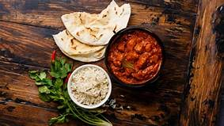

Dinner!!!
Having a healthy dinner is quite satisfying after a long, hard day. Most people would agree that going to bed on an empty stomach is not enjoyable, nor is waking up with an unbalanced body. This can get your day started in the wrong way, which in turn could make your fitness and weight loss endeavors seem a lot more difficult. So, if you are thinking that you should skip dinner in order to save yourself some trouble later, now is the time to think again.
StartersThis is one of the most favorite starter and loved by more people.We are keeping our restaurant more clean and always uses good quality ingredients. We provide the food by taking care of all the hygines and cleanliness required. Have a visit to our restaurant. we know that you will love the food and place. |
|
Pav-BhajiPav-Bhaji is the heart of foodish m,umbai restaurant. We are keeping our restaurant more clean and always uses good quality ingredients. We provide the food by taking care of all the hygines and cleanliness required. Have a visit to our restaurant. we know that you will love the food and place. |
 |
BiryaniWe provide both vwg asa well as non veg biryani.We are keeping our restaurant more clean and always uses good quality ingredients. We provide the food by taking care of all the hygines and cleanliness required. Have a visit to our restaurant. we know that you will love the food and place. |
|
TandoorTandoor is again a style of roti which is liked by most of the people.We are keeping our restaurant more clean and always uses good quality ingredients. We provide the food by taking care of all the hygines and cleanliness required. Have a visit to our restaurant. we know that you will love the food and place. |
 |
 |
DinnerFull Plate is one of the most favorite food and loved by more people.We are keeping our restaurant more clean and always uses good quality ingredients. We provide the food by taking care of all the hygines and cleanliness required. Have a visit to our restaurant. we know that you will love the food and place. |
specialitySomethinng intresting you must try. We are keeping our restaurant more clean and always uses good quality ingredients. We provide the food by taking care of all the hygines and cleanliness required. Have a visit to our restaurant. we know that you will love the food and place. |
 |